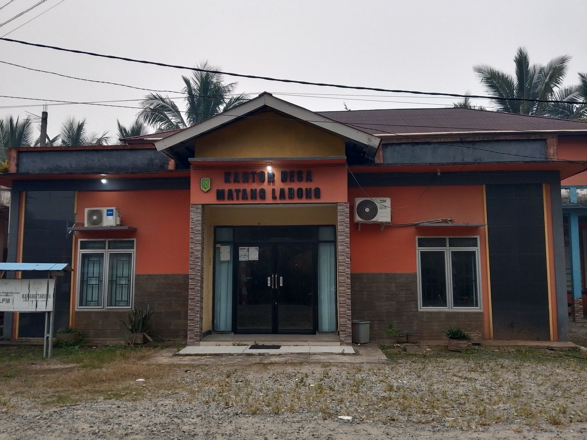

| Kecamatan | Tebas |
| Kabupaten | Sambas |
| Provinsi | Kalimantan Barat |
| Kode Pos | 79461 |
| Luas Wilayah | 15,20 km² (3,84% dari Kec. Tebas) |
| Kepala Desa | Ir. Hidayat |
| Klasifikasi | Pedesaan |

Desa Matang Labong secara historis terbentuk diawali dari Kampung Senyawan, pada masa kepemimpinan kepala kampung Japri H. Arsad (1928–1966).
Jalan Dusun Sidang RT 005/RW 002, Desa Matang Labong, Kec. Tebas. Pusat pelayanan administrasi warga, dipimpin oleh Ir. Hidayat.
📍 Buka di Google MapsKepala Desa dijabat oleh Ir. Hidayat. Nama-nama berikut tercatat sebagai perangkat desa pada situs resmi desa (jabatan spesifik tiap orang tidak tercantum jelas pada sumber yang tersedia).